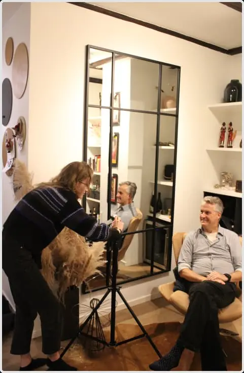
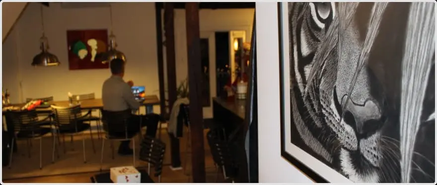
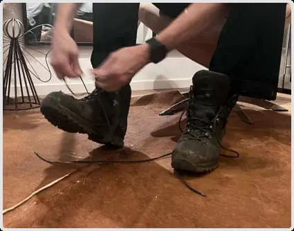

Hero Section
Turen til toppen
Michaels tur til toppen af Kilimanjaro
Jeg har haft fornøjelsen af at interviewe Michael, som har besteget Kilimanjaro. Han beskrev turen som både utrolig hård og fantastisk. På den ene side krævede det både fysisk og mentalt overskud at tackle de udfordrende forhold og den høje altitude, men på den anden side var udsigten og følelsen af at nå toppen en uforglemmelig belønning. Michael fremhævede især den unikke natur og den fællesskabsfølelse, der opstår, når man er på en så krævende rejse sammen med andre.
Galleri


